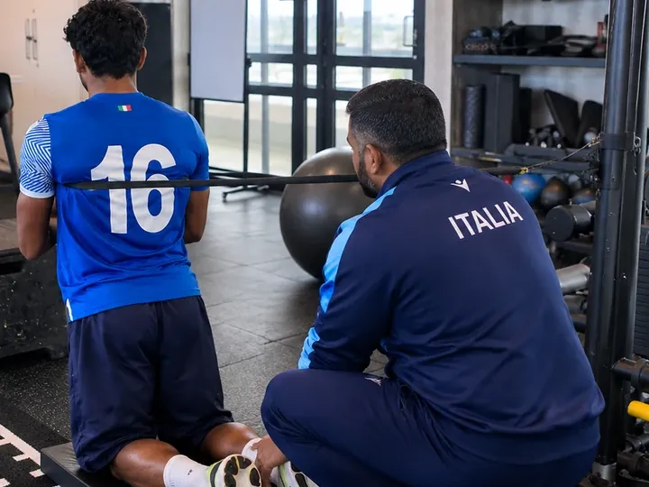
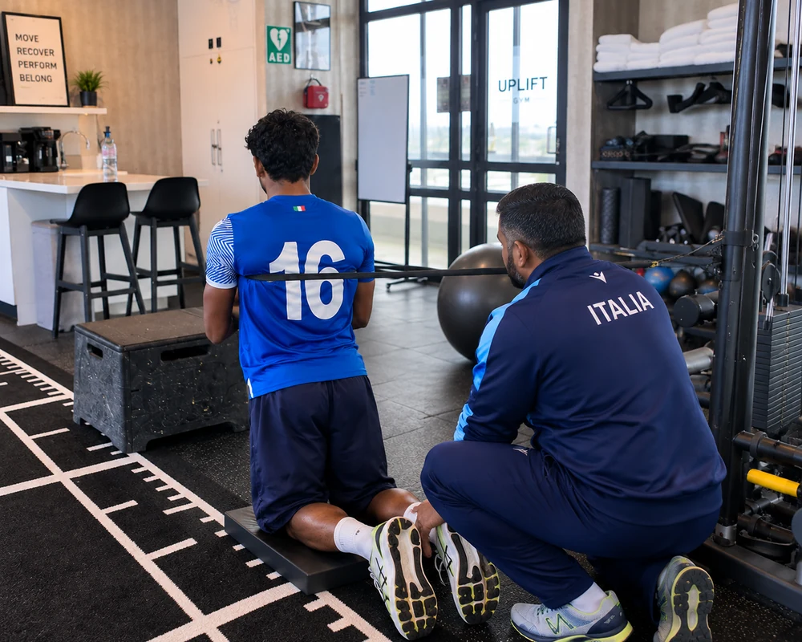
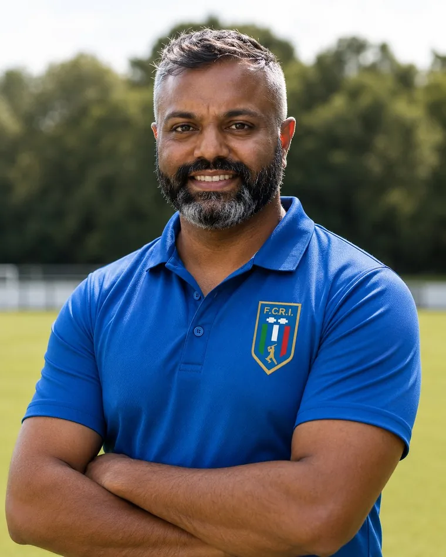

01

Sports & everyday injuries
Back, neck, shoulder, knee and other injuries affecting everyday life, work, exercise or sport.
Learn more →Physiotherapy · Richmond
One-to-one physiotherapy for pain, injury, rehabilitation and return to sport.

How I can help

Back, neck, shoulder, knee and other injuries affecting everyday life, work, exercise or sport.
Learn more →Specialist assessment and rehabilitation for bowling, batting, throwing and cricket-related injuries.
Learn more →Assessment and rehabilitation for pain or injury affecting strength training and lifting.
Learn more →Running-related pain and injury management, from recreational running through to competition.
Learn more →Experience
Thihan has spent more than 20 years working as a physiotherapist, including more than 15 years across professional and international sport. Bridge Road Physiotherapy brings that experience into one-to-one care in Richmond.



Your physiotherapist
I’m Thihan Chandramohan. You see me at your first assessment and at every appointment after it.
More than 20 years in physiotherapy, 15 of them in professional and international sport. My job is to work out what is limiting you, explain it in plain terms, and build a plan around what you need to get back to.
No handovers, no rotating clinicians. The person who assesses you is the person who rehabilitates you.
How it works
Understand the problem, your history, how you move and what you need to do.
Explain the findings in plain terms and agree what happens next.
Build rehabilitation around the work, training or sport you want to return to.
Google reviews
Every review is left by a patient on the Bridge Road Physiotherapy Google profile. Have a read before you book.
Find us
507 Bridge Road
Richmond VIC 3121
Located inside Uplift Gym. Enter through the main gym entrance. No membership needed.
Book online in under a minute, or call and speak to Thihan.